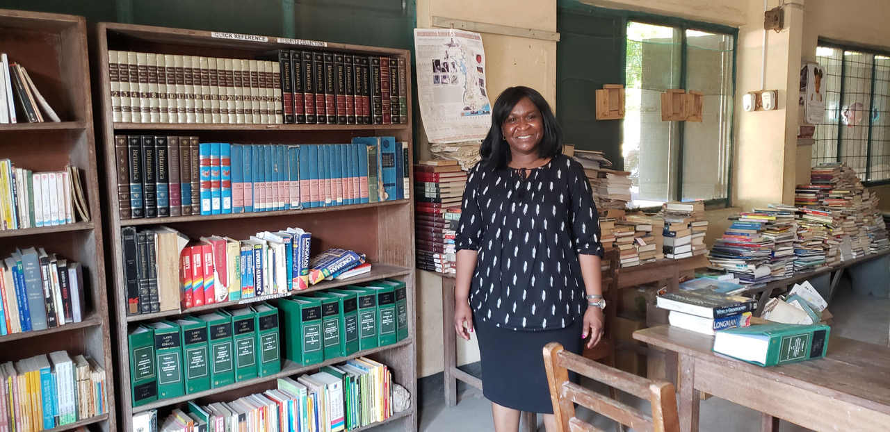

Member Spotlight
Sacha Cartagena
Sacha Cartagena is a first generation American, being born in the United States to a mother from the Dominican Republic and a father from Colombia. She is now a doctoral student in Exceptional Education at the University of Central Florida. Her research is focused on the preparation of educators to work with students with disabilities, especially those with severe disabilities and meeting their social/emotional/behavioral needs. For her dissertation Sacha is proposing to develop an online module using Universal Design for Learning (UDL) to teach pre-service educators about implementing evidence- based practices for students with severe disabilities.
Knowing education is still not mandated in many countries, her mother instilled the value of an education in Sacha. Not knowing what she wanted to do when she graduated from high school, and hearing there were many jobs available in special education, she took an introductory course in special education, loved it, and completed her undergrad in special education. Sacha then taught for six years and went to graduate school to pursue her Ph.D. She is planning for a future career teaching educators.
Sacha joined DISES to connect with the international special education community and to learn more about the unique challenges of international special education. She loves to travel and has visited 13 countries. Each time she travels she makes it a point to learn about their education system. In addition to touring in other countries, she has done volunteering such as teaching English to children and pouring concrete floors in the Dominican Republic.
In the Dominican Republic, Sacha learned that while education is technically compulsory, there is little enforcement of this law. As a result, students start education at different ages, graduate at different ages, and about 40% of students drop out before the 8 th grade. Only a few schools offer special education services, resulting in most youth with disabilities not enrolled in school. The country is currently working on large scale education reform, including more funding for more teacher training, updated curriculum, and increased access to equitable education for all students.
Dr. Deborah Tamakloe
Dr. Deborah Tamakloe, newly elected DISES Member at Large for International Outreach, is a native of Ghana and lived there for 33 years before coming to the United States. In Ghana she grew up in a compound house with extended family and non-family members. They would sit out by the fire at night and tell stories because there were no books in the home. Since she grew up with no books in her home, Dr Tamakloe realizes the importance of books in the home. So she now regularly takes books to Ghana for the children. She currently is an associate professor at Millersville University.
When asked to describe the educational programs for students with disabilities in Ghana, she said these children often do not have access to education because of basic challenges, lack of resources and the stigma attached to disabilities. Children with more obvious disabilities are often hidden in their communities, unable or not allowed to go to school. There are a few schools for the deaf or blind that were established by missionaries and one private school for children with low incidence disabilities that is very expensive and beyond the reach of average families. In working with parents of children with disabilities in Ghana, she found many parents of children with disabilities recognized their intelligence, but there are not schools with the resources to meet their needs.
Dr. Tamakloe said this is changing in Ghana with the help of initiatives by philanthropists and not-for-profit groups such as USAID and UNICEF. They are currently leading the mission to create and support inclusive schools where students with disabilities can receive the assistance they need to enable them to attend schools. Four hundred (400) teachers in 80 basic schools have been trained in inclusive education to provide access for children with mild to moderate disabilities. Eventually she would like to go back to Ghana to do community work with families of children with disabilities.
A selfie Dr. Tamakloe took of some of the children in her book club.

Dr. Tamakloe and the Library Project in Ghana.

Dr. Tamakloe leading one of many professional development sessions In Ghana.